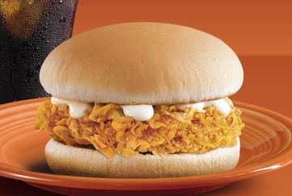
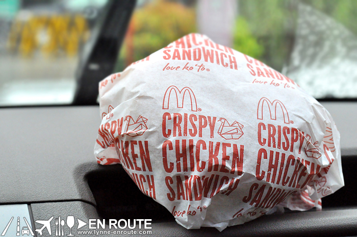
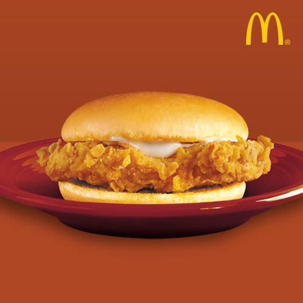

| Crispy Chicken Sandwich | ||
|---|---|---|
|  |  |  |
|
It's not actually because of the taste, although I also love it's taste. Out of all the other delicious food in the world. Why this one? There is a story behind why this is my favorite food. When I was in third year high school, I transferred to another
school in Dasma and live with in my grandma's house for some reason. Our own house is located in Bacoor.
The original set-up is that, I will go home to Bacoor during weekends. But that is not what happened, due to
the demand of schoolworks, there are many times that I wasn't able to go home to Bacoor so sometimes I would
only see my parents, especially my dad, twice a month because sometimes my mom would stay with me in my
grandma's house. My dad is also working during that time. Now, what my dad would do whenever we haven't seen
each other for a week is that he would buy 2-3 chicken sandwich from mcdo and drop it off at my school before
he goes to work and I will pick it up before going to class. That's the only time that we would see each other,
it was always a brief moment but it was enough for us.
Since then, it became my favorite until now. If it wasn't obvious
I'm a very sentimental person. I always like to assign or attach meanings to objects that would remind me of
a certain memory from the past. |
||